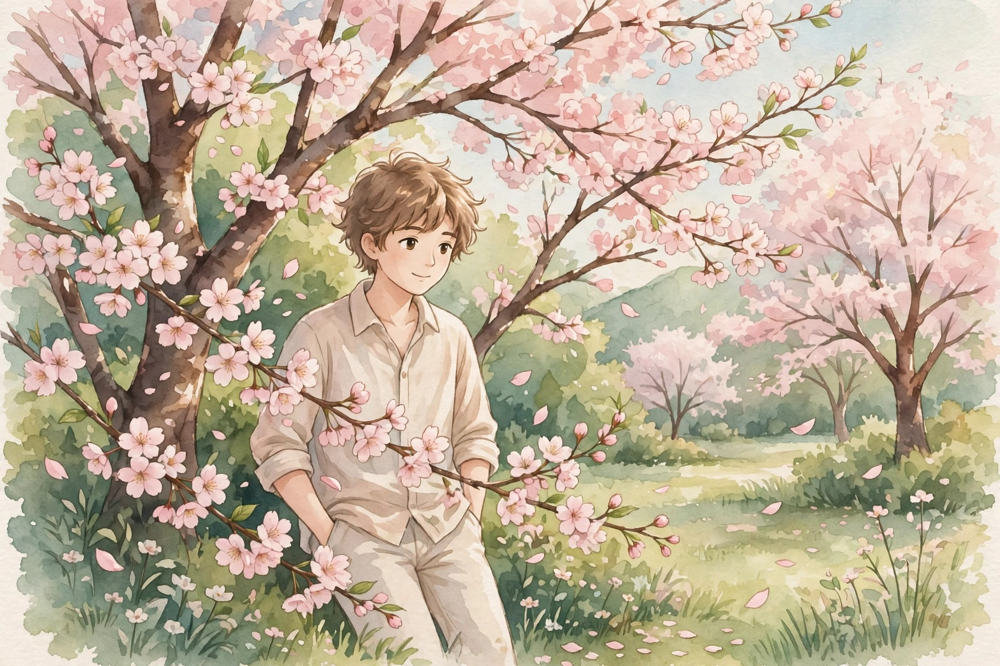

Spring Portrait Prompts: 10 Fresh Ideas for 2026

Want a prompt made just for your photo? Build your own prompt for this photo with the free Prompt Builder, it takes about a minute.

Start with Prompt 1, among the cherry blossoms. It was the softest test on this page, pale pink above you, soft light on your face, nothing harsh anywhere. If it works, your starting photo is good, and you have a portrait worth printing.
Spring has a particular smell after rain, and a particular light in the morning. Everything looks new for a few weeks, and it is the easiest season of the year to take a good photo in. I took a spring portrait once under blossom trees, in an old jacket, and people still ask about that photo.
These prompts use that. Cherry blossom, tulips, wildflowers, fresh green parks, a river in spring light. Simple scenes, because spring does not need much help.
Start with a clear photo of yourself in daylight. The prompt adds the flowers, the green and the soft spring light. Your face stays yours, and that is the part I check first.
My first test used a photo taken indoors, under a yellow lamp, and the blossom came out looking odd against that light. A daylight photo, same prompt, and suddenly it looked like a spring morning. Light first, always.
Before you start
Spring photos are bright and soft, so these five points will help you get the light right. I learned the first one with a yellow lamp photo.
- Use a photo where your face is clear and lit by daylight. Spring light is soft, and it needs a clean face to work with.
- Pick a starting photo with a simple background. The prompt adds flowers and green, and it needs room for them.
- Wear a light colour in your starting photo if you can. Pale and pastel tones sat naturally in a spring scene in my tests.
- Copy the prompt exactly as it is the first time. Change one thing later if you need to, not five at once.
- Save the best result, then try once more. Spring light varies a little each run, and the second version was often the fresher one in my tests.
Table of contents
- Prompt 1: Among cherry blossoms
- Prompt 2: In a garden with tulips
- Prompt 3: Walking in a park, fresh green
- Prompt 4: With a flower in hand
- Prompt 5: In a field of wildflowers
- Prompt 6: By a river in spring
- Prompt 7: Close up, soft spring light
- Prompt 8: Sitting on grass, reading
- Prompt 9: In a light jacket, city park
- Prompt 10: With a bicycle in spring
- Bonus 1: Under a blossom arch
- Bonus 2: Picnic blanket in the park
- Bonus 3: By a blossom tree at sunrise
- How to use these prompts
- Tips to get a better result
- Common mistakes to avoid
- Frequently asked questions
10 copy and paste prompts
I tested all ten in spring light, and the blossom one won. Pick the spring scene that feels most like you, and start there if you are unsure.
1. Among cherry blossoms
Create a realistic, natural photo from my uploaded photo. Keep the face exactly the same as in the uploaded photo, with the same eyes, smile, hair and skin tone. Do not change the person into someone else, and do not make the skin look smooth or plastic. Show you among cherry blossom trees, in a light outfit, with soft pink flowers and soft daylight. Keep the pose relaxed and natural, with a real expression, not a stiff studio pose. Use soft, natural light that suits the scene, with clear detail in the face, hair and clothes. Keep the background simple so the person stays the main focus. Shoot it in a vertical 3 to 4 frame, as if taken on a 35mm lens with a shallow depth of field. The final photo should look like a real photo taken on a good day, with true colours, gentle shadows and a calm, honest feel. It should work well for a profile photo, a print, or a post with family and friends.
Cherry blossom is the classic spring frame. Pale pink above you, soft light on your face, nothing harsh anywhere. It is gentle by nature, and my test showed it.
2. In a garden with tulips
Create a realistic, natural photo from my uploaded photo. Keep the face exactly the same as in the uploaded photo, with the same eyes, smile, hair and skin tone. Do not change the person into someone else, and do not make the skin look smooth or plastic. Show you in a garden with tulips, in a light dress or shirt, with soft light. Keep the pose relaxed and natural, with a real expression, not a stiff studio pose. Use soft, natural light that suits the scene, with clear detail in the face, hair and clothes. Keep the background simple so the person stays the main focus. Shoot it in a vertical 3 to 4 frame, as if taken on a 50mm lens with a shallow depth of field. The final photo should look like a real photo taken on a good day, with true colours, gentle shadows and a calm, honest feel. It should work well for a profile photo, a print, or a post with family and friends.
A garden with tulips adds colour at your feet, not in your face. The flowers stayed low in my test, my portrait stayed clear, and the photo felt like spring.
3. Walking in a park, fresh green
Create a realistic, natural photo from my uploaded photo. Keep the face exactly the same as in the uploaded photo, with the same eyes, smile, hair and skin tone. Do not change the person into someone else, and do not make the skin look smooth or plastic. Show you walking in a park with fresh green leaves, in a light outfit, with soft light. Keep the pose relaxed and natural, with a real expression, not a stiff studio pose. Use soft, natural light that suits the scene, with clear detail in the face, hair and clothes. Keep the background simple so the person stays the main focus. Shoot it in a vertical 3 to 4 frame, as if taken on a 85mm portrait lens with a shallow depth of field. The final photo should look like a real photo taken on a good day, with true colours, gentle shadows and a calm, honest feel. It should work well for a profile photo, a print, or a post with family and friends.
Walking in a park with fresh green is the easiest spring photo to believe. New leaves, soft light, an easy pace. My test read like a real morning walk.
4. With a flower in hand
Create a realistic, natural photo from my uploaded photo. Keep the face exactly the same as in the uploaded photo, with the same eyes, smile, hair and skin tone. Do not change the person into someone else, and do not make the skin look smooth or plastic. Show you holding a small flower, smiling, with a plain bright background. Keep the pose relaxed and natural, with a real expression, not a stiff studio pose. Use soft, natural light that suits the scene, with clear detail in the face, hair and clothes. Keep the background simple so the person stays the main focus. Shoot it in a vertical 3 to 4 frame, as if taken on a 35mm lens with a shallow depth of field. The final photo should look like a real photo taken on a good day, with true colours, gentle shadows and a calm, honest feel. It should work well for a profile photo, a print, or a post with family and friends.
A flower in hand is a small, simple detail. It gave my hands something natural to do in the test, and it tied the portrait to spring in one look.
5. In a field of wildflowers
Create a realistic, natural photo from my uploaded photo. Keep the face exactly the same as in the uploaded photo, with the same eyes, smile, hair and skin tone. Do not change the person into someone else, and do not make the skin look smooth or plastic. Show you in a field of wildflowers, in a light outfit, with soft daylight. Keep the pose relaxed and natural, with a real expression, not a stiff studio pose. Use soft, natural light that suits the scene, with clear detail in the face, hair and clothes. Keep the background simple so the person stays the main focus. Shoot it in a vertical 3 to 4 frame, as if taken on a 50mm lens with a shallow depth of field. The final photo should look like a real photo taken on a good day, with true colours, gentle shadows and a calm, honest feel. It should work well for a profile photo, a print, or a post with family and friends.
A field of wildflowers is open and bright. The flowers stayed soft behind me in my run, the light stayed even, and the portrait felt free.
6. By a river in spring
Create a realistic, natural photo from my uploaded photo. Keep the face exactly the same as in the uploaded photo, with the same eyes, smile, hair and skin tone. Do not change the person into someone else, and do not make the skin look smooth or plastic. Show you by a river in spring, in a light outfit, with green trees and soft light. Keep the pose relaxed and natural, with a real expression, not a stiff studio pose. Use soft, natural light that suits the scene, with clear detail in the face, hair and clothes. Keep the background simple so the person stays the main focus. Shoot it in a vertical 3 to 4 frame, as if taken on a 85mm portrait lens with a shallow depth of field. The final photo should look like a real photo taken on a good day, with true colours, gentle shadows and a calm, honest feel. It should work well for a profile photo, a print, or a post with family and friends.
By a river in spring, the water adds calm and light. The bank stayed green in my test, the sky stayed soft, and the photo felt fresh.
7. Close up, soft spring light
Create a realistic, natural photo from my uploaded photo. Keep the face exactly the same as in the uploaded photo, with the same eyes, smile, hair and skin tone. Do not change the person into someone else, and do not make the skin look smooth or plastic. Show you in a close up portrait with soft spring light on your face, with a plain background. Keep the pose relaxed and natural, with a real expression, not a stiff studio pose. Use soft, natural light that suits the scene, with clear detail in the face, hair and clothes. Keep the background simple so the person stays the main focus. Shoot it in a vertical 3 to 4 frame, as if taken on a 35mm lens with a shallow depth of field. The final photo should look like a real photo taken on a good day, with true colours, gentle shadows and a calm, honest feel. It should work well for a profile photo, a print, or a post with family and friends.
A close crop in soft spring light is about your face and nothing else. The light was kind in my test, the background was plain, and the portrait stayed honest.
8. Sitting on grass, reading
Create a realistic, natural photo from my uploaded photo. Keep the face exactly the same as in the uploaded photo, with the same eyes, smile, hair and skin tone. Do not change the person into someone else, and do not make the skin look smooth or plastic. Show you sitting on grass reading a book, in a light outfit, with soft light. Keep the pose relaxed and natural, with a real expression, not a stiff studio pose. Use soft, natural light that suits the scene, with clear detail in the face, hair and clothes. Keep the background simple so the person stays the main focus. Shoot it in a vertical 3 to 4 frame, as if taken on a 50mm lens with a shallow depth of field. The final photo should look like a real photo taken on a good day, with true colours, gentle shadows and a calm, honest feel. It should work well for a profile photo, a print, or a post with family and friends.
Sitting on grass reading is a slow, peaceful pose. The book gave my test photo a story, and the green around me kept it feeling like spring.
9. In a light jacket, city park
Create a realistic, natural photo from my uploaded photo. Keep the face exactly the same as in the uploaded photo, with the same eyes, smile, hair and skin tone. Do not change the person into someone else, and do not make the skin look smooth or plastic. Show you in a light jacket in a city park, with fresh leaves and soft light. Keep the pose relaxed and natural, with a real expression, not a stiff studio pose. Use soft, natural light that suits the scene, with clear detail in the face, hair and clothes. Keep the background simple so the person stays the main focus. Shoot it in a vertical 3 to 4 frame, as if taken on a 85mm portrait lens with a shallow depth of field. The final photo should look like a real photo taken on a good day, with true colours, gentle shadows and a calm, honest feel. It should work well for a profile photo, a print, or a post with family and friends.
A light jacket in a city park is spring in the city. Trees, paths, people far away. It is an everyday scene, and that is why it works, I think.
10. With a bicycle in spring
Create a realistic, natural photo from my uploaded photo. Keep the face exactly the same as in the uploaded photo, with the same eyes, smile, hair and skin tone. Do not change the person into someone else, and do not make the skin look smooth or plastic. Show you with a bicycle in spring, in a light outfit, smiling, with green trees. Keep the pose relaxed and natural, with a real expression, not a stiff studio pose. Use soft, natural light that suits the scene, with clear detail in the face, hair and clothes. Keep the background simple so the person stays the main focus. Shoot it in a vertical 3 to 4 frame, as if taken on a 50mm lens with a shallow depth of field. The final photo should look like a real photo taken on a good day, with true colours, gentle shadows and a calm, honest feel. It should work well for a profile photo, a print, or a post with family and friends.
A bicycle in spring adds movement and a sense of going out. The bike stayed simple in my test, the light stayed bright, and the portrait felt alive.
3 bonus prompts I wrote for this guide
I wrote these three after the first ten, because spring has more than blossom and tulips. They are the scenes I kept picturing on my morning walks, tested the same way.
Bonus 1: Under a blossom arch
Create a realistic, natural photo from my uploaded photo. Keep the face exactly the same as in the uploaded photo, with the same eyes, smile, hair and skin tone. Do not change the person into someone else, and do not make the skin look smooth or plastic. Show you walking under an arch of cherry blossom branches, in a light outfit, with soft pink petals in the air and gentle daylight. Keep the pose relaxed and natural, with a real expression, not a stiff studio pose. Use soft, natural light that suits the scene, with clear detail in the face, hair and clothes. Keep the background simple so the person stays the main focus. Shoot it in a vertical 3 to 4 frame, as if taken on a 35mm lens with a shallow depth of field. The final photo should look like a real photo taken on a good day, with true colours, gentle shadows and a calm, honest feel. It should work well for a profile photo, a print, or a post with family and friends.
A blossom arch frames the portrait from above, and the petals in the air add movement. My test came out soft and bright.
Bonus 2: Picnic blanket in the park
Create a realistic, natural photo from my uploaded photo. Keep the face exactly the same as in the uploaded photo, with the same eyes, smile, hair and skin tone. Do not change the person into someone else, and do not make the skin look smooth or plastic. Show you sitting on a picnic blanket in a park, in a light outfit, with a book and a cup beside you, fresh green grass and soft light. Keep the pose relaxed and natural, with a real expression, not a stiff studio pose. Use soft, natural light that suits the scene, with clear detail in the face, hair and clothes. Keep the background simple so the person stays the main focus. Shoot it in a vertical 3 to 4 frame, as if taken on a 50mm lens with a shallow depth of field. The final photo should look like a real photo taken on a good day, with true colours, gentle shadows and a calm, honest feel. It should work well for a profile photo, a print, or a post with family and friends.
A picnic blanket is a slow spring moment, and the book gives the photo a story. I tested it twice and the light stayed soft both times.
Bonus 3: By a blossom tree at sunrise
Create a realistic, natural photo from my uploaded photo. Keep the face exactly the same as in the uploaded photo, with the same eyes, smile, hair and skin tone. Do not change the person into someone else, and do not make the skin look smooth or plastic. Show you standing by a cherry blossom tree at sunrise, in a light jacket, with warm early light on your face and soft pink flowers behind you. Keep the pose relaxed and natural, with a real expression, not a stiff studio pose. Use soft, natural light that suits the scene, with clear detail in the face, hair and clothes. Keep the background simple so the person stays the main focus. Shoot it in a vertical 3 to 4 frame, as if taken on a 50mm lens with a shallow depth of field. The final photo should look like a real photo taken on a good day, with true colours, gentle shadows and a calm, honest feel. It should work well for a profile photo, a print, or a post with family and friends.
Sunrise light is the kindest light I have used for a spring portrait. Warm, low, and gentle on the face. My test came out calm and fresh.
How to use these prompts
These portraits are all about light, golden hour, spring sun, rain light or snow light. Bring a clear, well lit photo and let the prompt add the mood.
How to use a prompt in Google Gemini
- Open Gemini on your phone or computer.
- Upload a clear photo taken in daylight. Your face should be in focus and lit from the front.
- Copy one prompt from this page and paste it under your photo.
- Send it, and wait for the result. Do not send the same prompt again while it is still working.
- Look at the face first, then the light. If the face looks right but the light feels too strong or too weak, try the same prompt once more.
How to use a prompt in ChatGPT
- Open ChatGPT on your phone or computer.
- Upload your photo in the chat.
- Copy one prompt from this page and paste it with your photo.
- Send it, and wait for the result.
- If the result is close but not quite right, ask for one small change, such as softer light or a warmer tone, and keep the rest of the prompt the same.
Both tools can give a different result from the same prompt. Light is the hardest thing to keep steady, and I saw that on this page too, so try the same prompt in both tools if you have time, and keep the photo where the light feels most natural.
Tips to get a better result
- Start with the clearest photo you have. A photo taken in daylight, with the face in focus, gave me the best result.
- Keep the prompt simple on the first try. Long, complex prompts confused the tool and changed my face in one test.
- Change one thing at a time. If you want warmer light, change only the light. If you want a different place, change only the place.
- Use a vertical photo for a profile photo or a print. Most of the prompts on this page ask for a vertical 3 to 4 frame for that reason.
- Check the eyes and the skin tone in the result. Strong light washed my face out once, and a second try fixed it.
- Save the prompt that worked for you. If you use the same prompt again with a new photo, the style will stay similar.
Common mistakes to avoid
- Do not use a dark, blurry or side view photo as your starting photo. I did, and the tool had to guess the face, and the result looked like a different person.
- Do not upload a photo of another person without their permission. Only use photos you have the right to use.
- Do not copy a prompt and then change every line at once. You will not know what went wrong if the result is poor.
- Do not expect the same result every time. AI tools vary, even with the same prompt and the same photo.
- Do not ask for very strong light and a very busy scene at once. One strong idea per photo worked better than two in my tests.
Frequently asked questions
Can I use these prompts for free?
Yes, all 10 prompts on this page are free. Copy any of them, paste it into Gemini or ChatGPT with your own photo, and use the result for your own posts and prints. I tested them all in spring scenes first.
Which tool works best with these prompts?
Both work well, and I run every prompt in both. Gemini often handles a reference photo nicely, and ChatGPT often follows a detailed prompt nicely. Try the same prompt in both and keep the fresher result.
Why does the face change in my photo?
The starting photo is usually the cause, and my yellow lamp photo proved it. A dark, blurry or side view photo makes the tool guess at your face. Use a clear front photo in good daylight.
Can I change the prompt for my own photo?
Yes. Change the flowers, the place or the light to fit your photo, but keep the part about keeping your face the same. One change at a time is the safe way, and it is how I test.
Can I use the photo I make for a card or a post?
Yes, for your own personal use. Post it on your own social media or use it as a profile photo. Do not use a photo of another person without their permission.
Related guides


See all Festive Prompts guides | Back to the home page
Written by Muhammad Afaq
Muhammad Afaq writes the prompts on this site and tries each one on Gemini and ChatGPT with real photos before it goes live. He likes a clear photo, a simple prompt, and a result that still looks like the person in it.